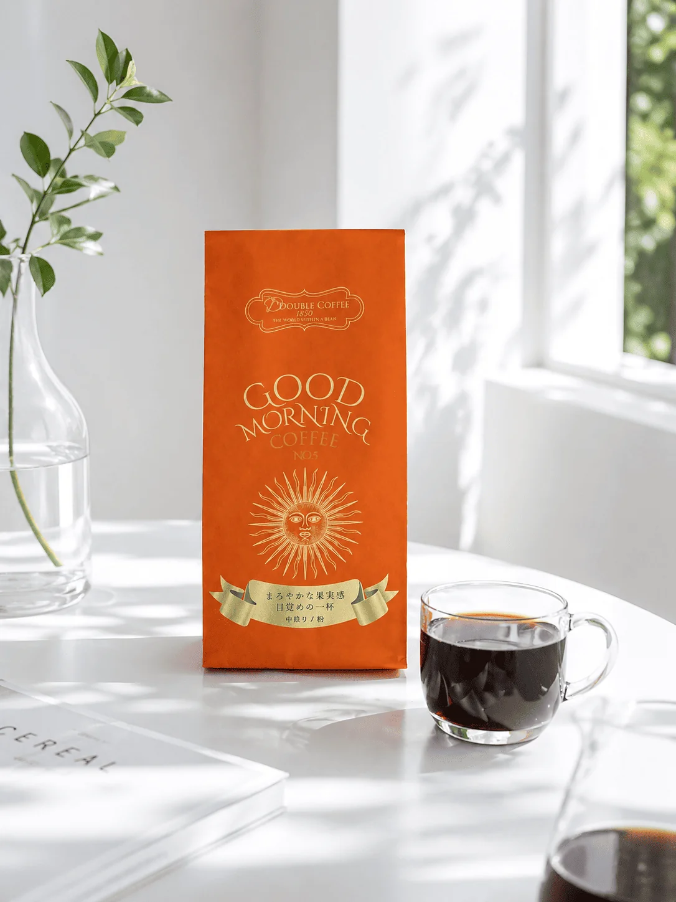

ベトナムコーヒーという言葉を聞いて、何を思い浮かべますか？練乳入りの甘いコーヒー？独特の濃さ？
ベトナムはブラジルに次ぐ世界第2位のコーヒー生産国であり、独自の飲み方や文化を持つコーヒー大国です。この記事では、ベトナムコーヒーの基本から豆の特徴、代表的な飲み方まで、まとめて解説します。
ベトナムはなぜコーヒー大国なのか
ベトナムは国連食糧農業機関（FAO）のデータでもブラジルに次ぐ世界第2位のコーヒー生産国です。特にロブスタ種の生産量は世界第1位で、世界市場の約40%を占めます※1。
コーヒーがベトナムに持ち込まれたのは19世紀のフランス植民地時代のこと。もともとお茶の文化だった国にコーヒーが加わり、わずか100年余りで国民的な飲み物になりました※2。1980年代後半からの経済改革以降、生産量はさらに大幅に増加しています※3。
ベトナムコーヒーの豆：ロブスタ種とは
ベトナムコーヒーの最大の特徴が「ロブスタ種」を使っていることです。一般的にスペシャリティコーヒーとして市場に出回るのはアラビカ種ですが、ロブスタ種はこれとは異なる個性を持ちます。
ロブスタ種の特徴は、力強い苦みと独特の香ばしさ。カフェイン含有量もアラビカ種の約2倍（約2〜2.7%）で、少量でもしっかり効きます※4。「品質が低い」というイメージがありますが、それは大量生産を前提とした安価なロブスタの話。適切に管理されたロブスタは、個性的で力強い豆です※5。
ドゥーブルコーヒーでは、ロブスタ種とアラビカ種を独自のバランスでブレンドしています。ロブスタ種による力強いボディと、アラビカ種の華やかな香りをあわせて楽しめます※6。
ベトナムコーヒーの代表的な飲み方
ベトナムには、地域ごとに独自のコーヒースタイルがあります※6。
- カフェ・スア・ダー（練乳アイスコーヒー） — ベトナムで最もポピュラーなスタイル。深煎りコーヒーにコンデンスミルク（練乳）を加え、氷で冷やして飲みます。フィン（専用ドリッパー）でゆっくり抽出するのが特徴です。
- カフェ・チュン（エッグコーヒー） — ハノイ発祥。卵黄と砂糖を泡立てたクリームをコーヒーの上にのせます。乳製品が手に入りにくかった時代に生まれた工夫が、今では定番になっています※6。
- カフェ・ムオイ（ソルティコーヒー） — フエ発祥。塩入りクリームをコーヒーにのせたスタイル。塩が甘さを引き立てます※6。
- スアチュア・ダインダー・ヴォイ・カフェ（ヨーグルトコーヒー） — ハノイで人気。コーヒーにヨーグルトを合わせた独特のスタイル。
フィン（ベトナム式ドリッパー）とは
ベトナムコーヒーに欠かせないのが「フィン」と呼ばれるドリッパー。カップの上に置いて、コーヒーを入れてお湯を注ぐと、3〜4分かけてゆっくりと落ちてきます。急ぐことができない仕組みで、待つ時間そのものがベトナムのコーヒー文化の一部になっています。
路地の低い椅子に座りながら、フィンが落ちきるのをただ待っている——そんな時間の流れ方が、ベトナムのコーヒーには根付いています。
産地：コーヒーベルトに位置するダクラク省
ベトナムのコーヒーの主産地は、ダクラク省（バンメトート）。北緯12度のコーヒーベルトに位置し、年間平均気温は25〜27度※7。ロブスタ種の栽培に最適な環境で、毎年コーヒーフェスティバルが開催されるほどコーヒーが文化の中心にある街です。
DOUBLE COFFEEのベトナムコーヒー
ドゥーブルコーヒーは、ベトナムの提携先とともにコーヒーづくりをしています。豆の選定から焙煎までを現地で丁寧に行い、アラビカ種とロブスタ種を独自のバランスでブレンド。砂糖・甘味料は一切使用していません。
フレーバーをのせるベースとして、ロブスタ種の力強さはとても優れています。どんな香りをのせても豆の個性が崩れない——そこがベトナムの豆を選ぶ理由のひとつです。
売上の一部はベトナム現地の幼稚園や学校への支援にも活用しています。

参考
- キーコーヒー「ベトナムコーヒーはどんな味？」：FAOデータによるベトナムの世界第2位の生産量・ロブスタ種世界第1位（世界市場の約40%）
- JTB「ベトナムの歴史とともに学ぶベトナムコーヒーの飲み方」：フランス植民地時代のコーヒー文化導入の記述
- BTJフーディーラボ「コーヒーベトナムの歴史と豆の特徴」（2025）：ドイモイ政策以降にコーヒー生産量が急増した記述
- BACAS「コーヒーの成分について」：ロブスタ種のカフェイン含有量（約2〜2.7%）がアラビカ種より高いことの記述
- 後珈琲焙煎所「ロブスタも美味い！」（note）：ロブスタの特性が個性であるという記述
- ポステ「ベトナムコーヒー完全ガイド」（2026年版）：各地域のコーヒースタイルの紹介
- DEHA Magazine「ベトナム産コーヒーの歴史と特徴」：ダクラク省の気候条件（北緯12度・年間平均気温25〜27度）
よくある質問
Q. ベトナムコーヒーはなぜ濃いのですか？
A. ロブスタ種を使用しているためです。ロブスタ種はアラビカ種よりカフェイン量が約2倍あり、力強い苦みと濃さが特徴です。フィンという専用器具でゆっくり抽出することで、さらに濃度が高まります。
Q. ロブスタ種とアラビカ種の違いは何ですか？
A. アラビカ種は華やかな香りと酸味が特徴で、スペシャルティコーヒーの主流です。ロブスタ種は力強い苦みとコクが特徴で、カフェイン量も多い。ドゥーブルコーヒーでは両方をブレンドし、それぞれの長所を活かしています。
Q. ベトナムコーヒーに砂糖は必要ですか？
A. ベトナムでは練乳を入れる飲み方が一般的ですが、砂糖・甘味料なしでも十分に味わいのあるコーヒーです。ドゥーブルコーヒーはフレーバーの香りでブラックのまま楽しめる設計をしています。